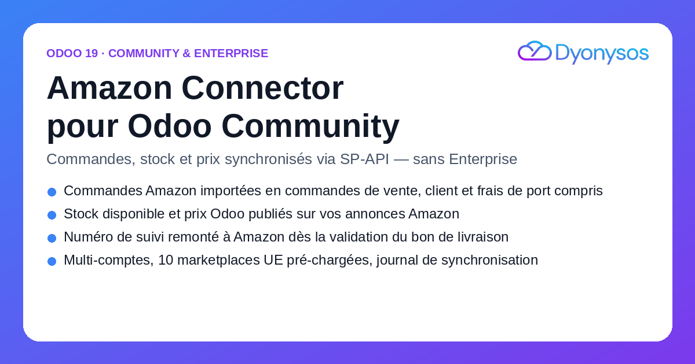
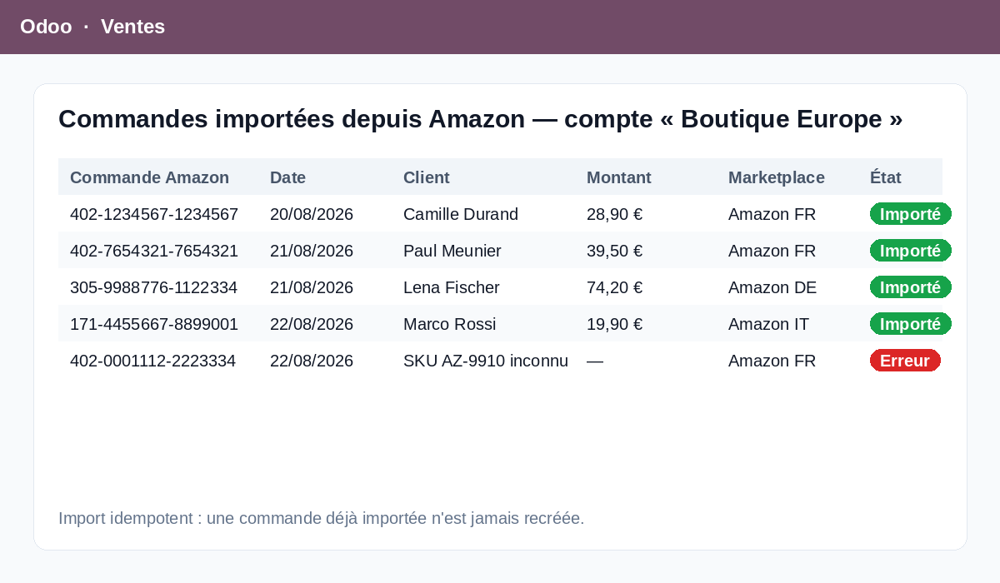
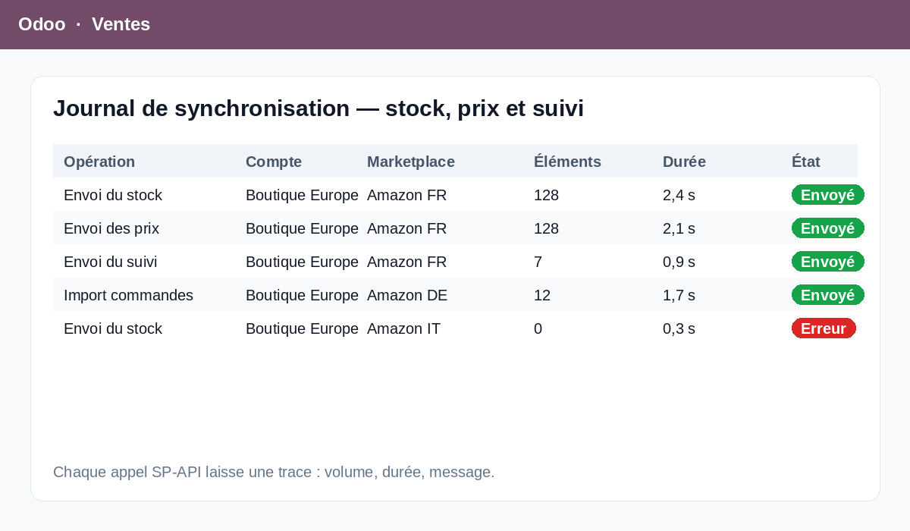

Le module sale_amazon livré par Odoo est réservé à l'édition Enterprise. Ce connecteur apporte la même liaison à une base Community, en s'appuyant directement sur l'API SP-API (Selling Partner API) d'Amazon.
Il va aussi plus loin : en plus de l'import des commandes et de la remontée du suivi, il publie sur vos annonces Amazon la quantité disponible et le prix issus d'Odoo.
Fonctionne également sur Odoo Enterprise, en parallèle ou à la place du module natif.
Chaque commande Amazon devient une commande de vente Odoo : client créé ou rapproché depuis l'adresse de livraison, lignes rapprochées par SKU vendeur, frais de port sur une ligne distincte, taxes selon la position fiscale du compte. La confirmation automatique est optionnelle.
Pour les articles marqués « Synchroniser avec Amazon », la quantité disponible de l'entrepôt choisi et le prix de la liste de prix du compte sont publiés sur l'annonce correspondante (PATCH /listings). Un SKU Amazon distinct de la référence interne est possible.
Dès qu'un bon de livraison rattaché à une commande Amazon est validé avec un numéro de suivi, l'expédition est confirmée côté Amazon : transporteur, numéro de colis, date d'expédition et lignes concernées.
La référence de commande Amazon est unique et indexée : réimporter le même lot ne crée aucun doublon. Chaque commande est traitée dans son propre point de sauvegarde — un SKU introuvable ou une adresse incomplète met cette commande en erreur dans le journal, sans interrompre le reste du lot.
Un seul point d'entrée réseau dans le code, une seule couche d'appel SP-API : jeton LWA mis en cache, quota Amazon géré par nouvelles tentatives avec temporisation croissante, messages d'erreur lisibles. Aucun secret n'est écrit dans les journaux.

Autant de comptes vendeurs que nécessaire, chacun avec sa région (Europe, Amérique du Nord, Extrême-Orient), son journal de vente, son équipe commerciale, son entrepôt et sa liste de prix. Les dix places de marché européennes sont pré-chargées : FR, DE, ES, IT, NL, BE, SE, PL, IE, UK.
Quatre boutons sur le compte — tester la connexion, importer les commandes, envoyer stock et prix, envoyer le suivi. Trois actions planifiées (10, 15 et 30 minutes) sont fournies désactivées par défaut : vous les activez quand votre paramétrage est validé.
Menu Ventes › Amazon › Journal de synchronisation : opération, compte, place de marché, nombre d'éléments, durée, statut et message. Les identifiants SP-API ne sont visibles que par les administrateurs techniques.
Un compte Amazon Seller Central et une application SP-API déclarée dans Amazon Developer Central (rôles Commandes, Stock et Prix, Expéditions). Vous renseignez sur le compte Odoo : le Seller ID, le LWA Client ID, le LWA Client Secret et le Refresh Token. La bibliothèque Python requests doit être installée sur le serveur.
Le module n'inclut pas la gestion Amazon FBA (les expéditions faites par Amazon), ni la facturation VCS, ni les retours et remboursements Amazon. Il couvre les commandes marchand (FBM), le stock, les prix et le suivi d'expédition.
Édition et intégration de modules Odoo.
Une question, un besoin d'adaptation, une place de marché supplémentaire ?
welcome@dyonysos.fr
https://dyonysos.fr
Support inclus : installation, paramétrage SP-API, correction des anomalies.